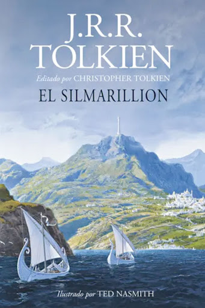

El Silmarillon

Sinopsis
El Silmarillion es el compendio mitológico que da forma al universo de la Tierra Media, donde se narra desde la creación del mundo hasta los albores de la Tercera Edad. Comienza con el Ainulindalë, el “Himno de los Ainur”, en el que los seres divinos forjan el diseño original del cosmos bajo la guía de Ilúvatar. A continuación, la Quenta Silmarillion relata las gestas de los elfos, la elaboración de las joyas llamadas Silmarils y la sombría rebelión de Fëanor, cuyo juramento desencadena guerras épicas contra el oscuro Morgoth.
En la sección del Akallabêth, la historia se traslada a los hombres de Númenor, cuya pujanza culmina en la arrogancia y la caída de una gran civilización. Finalmente, “De los Anillos del Poder y la Tercera Edad” sirve de puente hacia las narraciones de El Hobbit y El Señor de los Anillos, mostrando cómo Sauron forja su anillo y tienta a reinos enteros.
Más que una novela convencional, El Silmarillion es un mosaico de relatos que combina leyenda, tragedia y heroísmo. Su estilo solemnemente poético y su visionaria amplitud lo convierten en la piedra angular para entender la profunda mitología y el trasfondo de las obras posteriores de Tolkien.
Caracteristicas del Silmarillion
- Género épico y mitológico Un compendio de relatos que recrean los orígenes y primeros tiempos de la Tierra Media, con tono de saga legendaria.
- Estructura en cinco partes
- Ainulindalë (la creación del mundo)
- Valaquenta (los seres divinos)
- Quenta Silmarillion (las gestas de los elfos y los Silmarils)
- Akallabêth (la caída de Númenor)
- De los Anillos del Poder y la Tercera Edad (preludio a El Señor de los Anillos)
- Estilo narrativo solemne Emplea un registro formal y arcaico que evoca textos bíblicos y crónicas antiguas, con un narrador omnisciente que abarca eras.
- Alcance temporal y geográfico Abarca desde la creación del universo hasta el inicio de la Tercera Edad, detallando continentes perdidos (Beleriand, Númenor) y múltiples culturas.
- Temas centrales - La creación y la música del mundo - El conflicto entre libre albedrío y destino - El orgullo, la traición y la redención - La heroicidad trágica de los personajes
- Profundidad de personajes Presenta dioses (Valar), espíritus (Maiar), elfos, hombres y el villano supremo Morgoth, cuyas historias entrelazadas revelan grandes tragedias y sacrificios.
- Origen póstumo y edición Basado en los manuscritos de J.R.R. Tolkien, fue editado y publicado por su hijo Christopher Tolkien en 1977, consolidando la mitología de la Tierra Media.
- Importancia para la Tierra Media Actúa como piedra angular: establece trasfondo, genealogías y mitos que luego sustentan El Hobbit y El Señor de los Anillos.